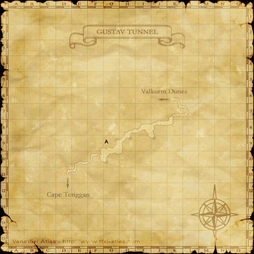
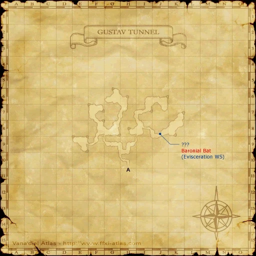

Before you begin
- Complete ASA 5.
- Black book.
- Prepared level-75 battle party.
Starting point
Outcropping · Gustav Tunnel · F-10
Era note: 2009 level-75-era add-on. Modern retail shortcuts and item-level solo claims are not assumed on Zenith.
People in this mission

Walkthrough
- Reach the Outcropping at F-10 in Gustav Tunnel and examine it for the scene, then prepare for the confrontation.
- Fight the agents Bompupu, Gorattz and Renfred. Their initial copies lead into the real agents and further clones.
- Identify the real agents by their greater durability and ninjutsu casting. Defeating a real agent removes that agent's copies; keep healing and crowd control ready as the groups overlap.
- After victory, examine the Outcropping again for the required concluding scene before leaving.
Completion and reward
Cactuar key and story progression.
What this opens
- ASA 7
Area maps
Open a zone below, then select a map to enlarge it. Match the named floors and grid coordinates in the steps; these are reference area maps, not a live position tracker.
Gustav Tunnel






Zone guides
References
Steps are an original summary of the linked walkthrough and reviewed source. Other servers’ bonus rewards are not included. How to read requirements, waits and battlefield notes.